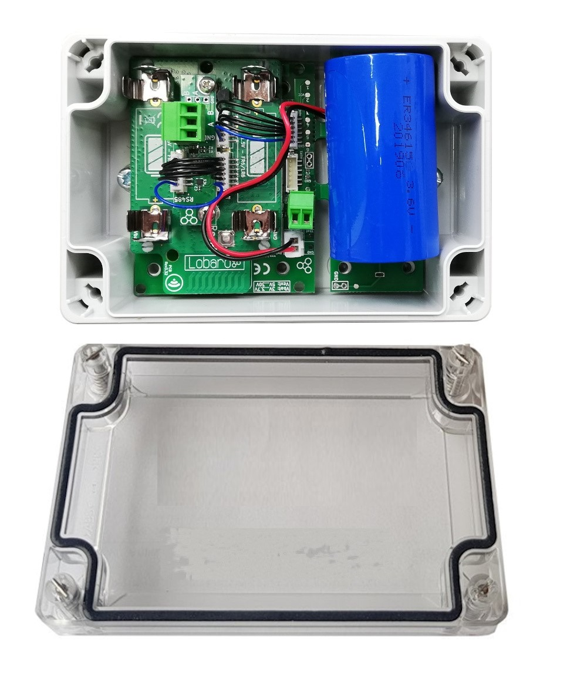
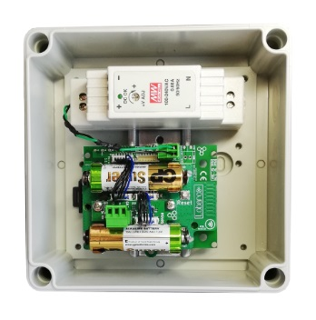

Modbus (ASCII / RTU) over LoRaWAN Bridge
Version v1.x.x (since 2019-10-16)
This is the latest version. For older revisions please refer to the version overview.
This version has a different upload format than older versions!
If you are using 0.3.x firmware, please see the 0.3.x Manual.
If you are updating to this firmware, be aware that you will have to update your
configuration and the parser in your backend.
Key Features
- LoRaWAN 1.0.x and 1.1 network servers supported
- LoRaWAN Class A or Class C operation
- LoRaWAN 1.1 time synchronisation
- Configuration via USB or remotely via LoRaWAN downlink
- ModBus ASCII and RTU modes supported
- Readout of ModBus Coils, Discrete Inputs, Input Registers and Holding Registers
- ModBus dialog mode via USB for easy configuration testing
- Coexistence with 2nd Modbus Master possible (bus sharing, Listen before talk)
Target Measurement / Purpose
The Lobaro Modbus LoRaWAN Bridge is a low power device that can be used to communicate with Modbus Slave devices (ASCII/RTU) on a RS-485 bus over a LoRaWAN network. Modbus commands can be transmitted via Downlink message to the Bridge and are forwarded by the Bridge to the connected Slave Devices. Received responses are forwarded via LoRaWAN Uplink messages. The Modbus Bridge can also be configured to execute Modbus commands regularly and report the responses via LoRaWAN uplinks.
The Bridge supports LoRaWAN Operation Mode Class A for power efficient operation (for long operation periods powered by battery), as well as Class C to enable short reaction time to Downlink requests.
The Modbus Bridge supports reading of all four object types that can be provided by Modbus slave devices: Coil, Discrete Input, Input Register, and Holding Register. It also supports writing values to both writable objects: Coils and Holding Registers. Multiple different slave devices on the Bus can be accessed individually by a single Bridge device. Reading intervals and register definitions can be configured very flexibly to suit individual requirements.
Typical applications for Modbus devices include reading out electric and water meters or retrieving data from environmental sensors like temperature and humidity. Industrial machines as well as solar panel installations often include a Modbus connection to supply supervision and automated operation.
Supported Devices
The Lobaro Modbus LoRaWAN Bridge works with all devices that act as a Modbus Client using RTU or ASCII (Modbus TCP is not supported). Some devices that have been used successfully with the Bridge:
| Device | Type | Manufacturer | More information |
|---|---|---|---|
| Octave Ultrasonic Meter | Water meter | Arad Group | External Link |
| ECL Controller | Heat/Hot Water Regulation | Danfoss | External Link |
| UMD 97 | Smart Grid Power Meter | PQ Plus | External Link (German) |
| DRS458DE | Power Meter | B+G E-Tech GmbH | External Link |
Product variants
The LoRaWAN Modbus bridge can be ordered in two standard variants. For even more customizations options see Hardware Variants overview.
Variant battery powered
LoRaWAN Modbus Bridge (XH battery connector, IP67 housing), Order number: 8000041
ER34615 (3.6V Battery, XH Connector, 0.2A), Order number: 3000169

Variant external powered
LoRaWAN Modbus Bridge (ext. Power, Din-Rail, no housing), Order number: 8000043
DR-15-5 DIN-Rail power supply 5V, Order number: 3000006
RK 4/12-L DIN-Rail Housing, Order number: 3000005

Data Sheet with dimensions (PDF)
Further customization Options
The product variants shown above are the standard variants.
Other power supply options & housing are available on request
- External antenna
- AA batteries
- NB-IoT instead of LoRaWAN
Contact us via support@lobaro.de if you need our offer for a special variant.
Modbus Introduction
Modbus defines four different object types form which values can be read: Coils, Discrete Inputs, Input Registers, and Holding Registers. Of those four, Coils and Holding Registers can also be written to. Coils and Discrete Inputs hold single bit values while Input Registers and Holding Registers hold 16 bit values. For values that cannot fit into 16 bit, it is customary to use multiple consecutive registers to hold the value. Modbus does not define what the bytes in the registers represent; it is up to the creator of the Modbus Slave Device to specify how to interpret the stored bits. A 16 bit register could be used to hold a single byte value, for example, or four consecutive registers could hold a double precision floating point number. Storing texts as ASCII characters is also possible. For integer numbers in particular it there is no defined byte order, nor signage definition. Because of those ambiguities it is not possible for the Lobaro LoRaWAN Bridge to understand the data read from/written to Slave Devices. All communications therefore simply forward raw Modbus Commands and Responses with their payload, as it communicated on the Bus. Any check sums (CRC16 for RTU, LRC for ASCII) are excluded from LoRaWAN communications or the Bridge's configuration, as there are other check sums in work their already.
For a deeper introduction into Modbus please refer to https://en.wikipedia.org/wiki/Modbus.
Quick Start Guide
Please refer to the rest of this documentation for a save and proper use of the Modbus Bridge.
This Quick Start Guide can only show you basic operations. It illustrates reading a single value from one Slave Device.
- Connect the Modbus Bridge to your Modbus Slave Device using the RS485 connection using
a twisted pair cable:
AtoA,BtoB, andGNDtoGND(GNDis not strictly necessary but enhances the connection. Not all slave devices supply aGNDconnector). - Connect the Modbus Bridge to a computer using the Lobaro Configuration Adapter and the Lobaro Maintenance Tool.
- Synchronise the LoRaWAN configuration parameters between the Bridge and your Network Server.
- Make sure the Bridge is in reach of a Gateway attached to your Network Server.
- Set the Modbus Parameters according to your Slave Device (ASCII/RTU, Baud, Data Length, Stop Bits, Parity).
- Set
MbCmdto the Modbus Command to read the register you need (see below). - Save the configuration and switch to the Log tab. You should see the device requesting the data and uploading it via LoRaWAN.
MbCmd must contain the Modbus Command the Bridge will execute. The command is
entered in Hex and without any checksums and is 6 bytes long (12 hexdigits).
The default value is 010300000003, it consists of 4 parts: 01, 03, 0000, 0003
01- Address of the Slave Device. 1 byte: often
01new devices 03- What kind of Modbus Register to read. 1 byte.
03stand for Holding Register. 0000- Number/address of the first register to read. 2 bytes.
Many devices have some value to read out at
0000. 0003- Number of consecutive registers to read from the first register. 2 bytes. This would read the registers #0, #1, and #2 in one command.
The format used for MbCmd is conforming to the Modbus Standard.
See Configurations/Modbus Commands for a description and
Examples for some more advance examples. The Modbus Bridge has a
Dialog Mode that lets you try out Modbus Commands interactively
which helps getting used to the syntax and helps you in trying out your slave devices.
Work Cycle
The Modbus LoRaWAN Bridge has a simple work cycle. It spends most of the time in a deep sleep state, to conserve energy. For every reading it wakes up for a few seconds, requests values from the connected slave devices, uploads the data via LoRaWAN, and then goes to sleep again. The following flowchart illustrates the work cycle:
- Init
- When the device starts (because it has just been connected to a power source, or after a reboot) it begins in the Init state. A quick self-check is executed; if that succeeds, the green on-board LED blinks once, slowly. After that the configuration is evaluated and checked for invalid values. If any problems are detected during Init, the device's LED will light up for three times, and the device will then reboot. If everything is okay, the device will continue with the Test Reading.
- Test Reading
- After verifying configuration, the Bridge executes all Modbus Commands stored once without uploading the results but logging them only to the console. This makes it easy to verify all Modbus Slaves are reachable and their registers can be read. Connect your computer to the Bridge using the Lobaro Config Adapter and check the output using the Lobaro Maintenance Tool. The device will continue with LoRaWAN Join to connect to the Network (whether the test reading was successful or not does not change this).
- LoRaWAN Join
- The Bridge tries to connect to the LoRaWAN Network. The Details depend on the device's configuration (OTAA vs. ABP, optional Time synchronisation). Unless ABP is used, the Bridge will remain in this state until joining succeeds. It will repeat to send Join requests with decreasing frequency. After successfully attaching it enters Data Collection for the first time and starts the normal operation cycle.
- Data Collection
- The Bridge sends all Modbus Commands from the Configuration on the Bus and collects the answers (or lack thereof).
- Data Transfer
- The collected Modbus Responses are uploaded via LoRaWAN. This can take multiple upload messages depending on the amount of data collected. Once a day a status message is also uploaded, giving some information about the state of the Bridge itself. If many messages are uploaded this can take a long time. At least one message is uploaded during this state. When all data is uploaded, the device goes to Sleep.
- Sleep
- Between activations the device enters a very power efficient sleep mode. It stays dormant until the time specified by the Cron expression, when it changes back to Data Collection.
Configuration
The (initial) configuration is normally done using our free Lobaro Maintenance Tool and the USB PC configuation adapter.
Beside this the configuration can also be changed or read remotely in the field using LoRaWAN downlink messages, see Downlinks description.
LoRaWAN
The connection to the LoRaWAN network is defined by multiple configuration parameters. This need to be set according to your LoRaWAN network and the way your device is supposed to be attached to it, or the device will not be able to send any data.
For a detailed introduction into how this values need to be configured, please refer to the chapter LoRaWAN configuration in our LoRaWAN background article.
| Name | Description | Type | Values |
|---|---|---|---|
OTAA |
Activation: OTAA or ABP | bool |
true= use OTAA, false= use ABP |
DevEUI |
DevEUI used to identify the Device | byte[8] |
e.g. 0123456789abcdef |
JoinEUI |
Used for OTAA (called AppEUI in v1.0) | byte[8] |
e.g. 0123456789abcdef |
AppKey |
Key used for OTAA (v1.0 and v1.1) | byte[16] |
|
NwkKey |
Key used for OTAA (v1.1 only) | byte[16] |
|
SF |
Initial / maximum Spreading Factor | int |
7 - 12 |
ADR |
Use Adaptive Data Rate | bool |
true= use ADR, false= don't |
OpMode |
Operation Mode | string |
A= Class A, C= Class C |
TimeSync |
Days after which to sync time | int |
days, 0=don't sync time |
RndDelay |
Random delay before sending | int |
max seconds |
RemoteConf |
Support Remote Configuration | bool |
true=allow, false=deactivate |
LostReboot |
Days without downlink before reboot | int |
days, 0=don't reboot |
Modbus/UART
There are several values that define the configuration via Modbus. These values depend on the Slave devices that you want to read out. Please refer to your Modbus Devices's manual to find out the correct configuration.
| name | description | values |
|---|---|---|
MbProt |
Modbus-Protocol to use | RTU. ASCII |
MbBaud |
UART Baud rate | 9600, 19200, 38400, ... |
MbDataLen |
UART data length | 7, 8, 9 |
MbStopBits |
UART stop bits | 0.5, 1, 1.5, 2 (written exactly like this) |
MbPar |
UART parity | NONE, EVEN, ODD |
MbCron |
Cron expression† defining when to read. | 0 0/15 * * * * for every 15 minutes |
MbCmd |
List of Modbus Commands (see below). | 010300010003 |
PlFmt |
Uplink Format | 1, 2, or 3, see Payload Formats |
EnDL |
Enable Downlinks | true= enable sending Modbus Commands via Downlink |
DialogMode |
Enable Dialog Mode | true= set the Bridge to Dialog Mode |
LbtDuration |
Listen-before-talk Duration | 0= disables, 1-3600= seconds of lbt duration |
LbtSilence |
Listen-before-talk Silence | 0= disabled, 1-3600 seconds of silence needed |
† See also our Introduction to Cron expressions.
Modbus Commands
Whenever the cron expression given in the configuration value MbCron activates, the
Modbus Bridge wakes up from hibernation (or listening mode, for Class C), a set of
configured Modbus Commands (set in the configuration parameter MbCmd)
is executed over the RS-485 bus. Any responses received from
the addressed Slave Device will be uploaded via LoRaWAN.
The Modbus Commands to be executed must be entered in the config as hexencoded bytes,
exactly the way they are to be sent over the bus. Checksums must not be included in the
configuration. Multiple commands can be added to the configuration, separated by commas (no
spaces). For example if you want the Bridge to read the Holding Registers 100, 101, and 102
on two separated Slave Devices with the addresses 9 and 10, you would need to set MbCmd
to 090300640003,0a0300640003.
You can configure any byte sequence you want to be sent; not all will be valid Modbus Commands. This feature has been developed to execute register/coil reads and upload the values retrieved. It is possible to use it for writing values as well, but the usefulness of that is limited. If you configure register writes, be aware that the commands are also executed when the device boots!
Keep in mind that the responses to your commands will be sent using LoRaWAN, which has only a very limited packet size! Modbus responses can be over 200 bytes long. For reading commands, the Modbus Response contains 6 bytes to repeat the command. The data format used by the Modbus Bridge adds another 6 bytes. On higher spreading factors with 51 byte message limit this only leaves 39 bytes for the actual read data (in EU LoRaWAN configuration, other areas might have a slightly different number). Responses that will not fit into a single LoRaWAN Uplink will be split and uploaded using multiple LoRaWAN messages. Your backend will need to those parts back together. Any message that is the continuation of an earlier uplink will be sent using port 5 (see Split Messages).
For a short introduction into Modbus Commands and some examples of configurations and their created responses, please take a look at the examples.
Listen-Before-Talk
If you want to use the Lobaro Modbus Bridge to read out values on an installation that already has an active Modbus Master, you will run into conflicts, because the Bridge acts as a Master. Normally only a single Master device is allowed on a Modbus installation. The Bridge supports a Listen-Before-Talk feature, that makes it possible to be used alongside a second Master Device (under certain conditions).
If your other Master Device has periods of non-communication that are long enough, you can configure the Bridge to wait for those pauses before starting it's own requests: When Listen-Before-Talk is activated, the Bridge does not immediately start sending on the Bus when it normally would. Instead it starts listening on the Bus until the other Master starts talking and then waits for silence to detect when the other Master just finished communicating. Only then does it send it's requests.
The Bridge waits for a maximum of LbtDuration seconds for the other Master to start
communicating. Then it waits for a period of silence that lasts at least LbtSilence
seconds to decide that the other master has completed its work and is now in pause.
So if, for example, your other Master has a work interval of 2 minutes and is active
for about 30 seconds without longer pauses, you could set LbtDuration to 130
(10 seconds added as a buffer), and LbtSilence to 15 (make sure the value is longer
than the timeout your other master has).
You will have to know exactly how your other Master acts to setup this feature.
If you set either of LbtDuration or LbtSilence to 0, you will deactivate
Listen-Before-Talk completely (it is deactivated by default).
Payload formats
The Modbus Bridge sends two different kinds of messages over three different LoRaWAN ports:
| Direction | Port | Message |
|---|---|---|
| Uplink | 1 | Status messages. |
| Uplink | 3 | Modbus Responses triggered by configuration. |
| Uplink | 4 | Modbus Responses triggered by Downlinks. |
| Uplink | 5 | Continuation of Responses that do not fit in a single Uplink. |
| Downlink | 4 | Modbus Commands to be forwarded by the Bridge. |
In addition to the description we also supply a reference decoder usable in TTN at the end of this document.
Uplink
Status messages
The Modbus Bridge sends a status messages report on the health of the device itself. This messages are sent along when the device is sending data packages with a maximum of one status message per day.
Status messages are transmitted on port 1 and have a fixed length of 14 bytes.
| name | pos | len | type | description | example |
|---|---|---|---|---|---|
| version | 0 | 3 | uint8[3] |
Version of firmware running on the device | [0, 4, 1] ≡ v0.4.1 |
| flag | 3 | 1 | uint8 |
Status flag, for internal use | 0 |
| temperature | 4 | 2 | int16 |
Device's internal temperature in tenth °C | 246 ≡ 24.6°C |
| voltage | 6 | 2 | uint16 |
Voltage supplied by power source in mV | 3547 ≡ 3.547V |
| timestamp | 8 | 5 | int40 |
Internal date/time at creation of the status packet as UNIX timestamp | 1533055905 |
| opMode | 13 | 1 | char |
LoRaWAN Operation mode the device runs | A or C |
Data messages
Data messages contain responses to Modbus Commands received by the Bridge.
The Bridge supports multiple Payload formats for different use cases. The format is selected
by the configuration parameter PlFmt:
1: Verbose payload format (port 3)2: Compact payload format with time (port 6)3: Compact payload format without time (port 7)
Verbose payload format
The verbose payload format (PlFmt=1) is the standard setting of the Bridge. It is designed to be very
versatile (it uploads the complete Response sent by the Slave Devices, so reading registers as well as
writing registers are both supported). It contains all information you need to know the register and the
slave device your data is coming from. You do not need to know the exact configuration of your devices in your
backend to be able to parse the data. This is convenient when you have man Modbus Bridges with different
configuration in the field. This payload format is also good in communicating error conditions in case
the executed Modbus Commands fail.
The trade off is overhead in the transmission. If you need to get a lot of data uploaded often, this could
be a problem for you with the limited LoRaWAN bandwidth. If this is a problem for your use case, you should
take a look at the compact data formats.
Data messages using the verbose payload format are uploaded on port 3. Every message starts with a 5 byte
timestamp (UNIX timestamp as big endian int40,
see timestamps in our LoRaWAN devices)
for more information). The timestamp is followed by one or more responses of varying length.
Each of the responses starts with a single byte (uint8) indicating the length of its payload (len) followed
by that many bytes of payload. The payload consists of the raw Modbus response as sent by the Slave Device
followed by 3 additional bytes: the first register/coil as uint16 (big endian) and the number of
registers/coils as uint8 taken from the executed command. The following tables visualise the
message structure. See the Examples Section for some sample data messages explained down to
the individual bytes. We also provide a Reference Decoder in JavaScript that can read
the format.
The timestamp in the message is the wakeup time when the device was activated by the cron expression in MbCron
(using the devices internal clock). The Modbus Response in the message in addition with the start register/coil and
the register/coil count makes it possible to know which registers/coils where exactly read/written, what kind
they were, and the address of the device. For Modbus Commands that do not have a register/coil count (like
function 5, forcing a single coil), or for those that do not contain a start register/coil (e.g. funtion 7,
reading exception status), the contents of the additional fields start register and/or count are undefined.
The payload format used only a single byte for the count value, so if you are reading/writing more than
255 coils, the higher byte will be cut off.
The Bridge puts as many responses as in one message as possible (without changing the order of responses and respecting the maximal message size of the current Spreading Factor). If the responses do not fit into a single message it will upload as many messages as needed. When a single response is too long to fit in a message, the response will be split up over multiple messages and will need to be reassembled in the backend. See Split Messages for instructions on how to do that and how to prevent splitting.
Structure of a message on port 3:
Bytes | 0 . 1 . 2 . 3 . 4 | 5 ... | ... | ... | ... |
+-------------------+------------+------------+-----+------------+
Part | timestamp | response 1 | response 2 | ... | response n |
Structure of a response part on port 3:
Bytes | 0 | 1 .. len-3 | len-2 . len-1 | len |
+-----+-----------------+----------------+-------+
Field | len | Modbus response | start register | count |
Compact payload format
The compact payload format transmits only the payload bytes of the received responses. This format requires less bytes to upload the information than the verbose payload format, allowing more data to be read out per hour, but it requires a customised backend that knows the exact configuration of the Bridge. This format only makes sense for reading registers/coils. Error conditions can not be communicated very well using this format.
For PlFmt=2 the data messages are uploaded on port 6. The messages start with a 5 byte timestamp
(same as in verbose payload format). The timestamp is followed by only the payload bytes of the
Modbus Responses triggerd by the configuration parameter MbCmd. The bytes are just appended to the
message after another, in the order of the Commands in MbCmd. You will need to know the exact
value of MbCmd of each of your Bridges to make sense of the data. When using this payload format the
Remote Configuration is very helpful: it can be used to read the value of
configuration parameters over LoRaWAN without physical access to the device (it can also change those values).
If a Modbus command fails to execute (for example if the Slave device has a power outage or if the bus is
disconnected), the data bytes of that command are all set to 0xff. This could also be a valid
value (depending on the nature of your data), but there is no other channel to communicate failure.
0xff is easy to spot and 0xffff is relative unlikely to be a real value for Modbus registers.
When using the Bridge with PlFmt=3 data messages are uploaded on port 7. The payload format is
identical to the payload format for PlFmt=3 only without the timestamp (to save another 5 bytes in case
you do not care about the time of your readings).
Split messages
LoRaWAN has a very limited message size. For high spreading factors this goes
as low as 51 bytes. If a Modbus Response is too long to fit into a single
message, the Modbus Bridge will split it up into multiple messages that are
sent in sequence. Patching messages back together requires a more complex
backend that can save a state. A simple parse on The Things Network will not
be able to do that. If your backend cannot handle this process, you can work
around it by configuring your MbCmd in a way that no single response will
be longer than 45 bytes (by reading out a maximum of 24 consecutive registers in
a single command). If you have a configuration that results in longer Responses
you should make sure your backend can handle split Responses as described here.
If a Response is too long to fit into a single message, the Bridge puts as many bytes as possible into the message. You can tell by the length of the message and the length of the Modbus Response indicated in the message, that this is only the first part of a message. This first part will be upload normally on port 3 (or port 4, if triggered by a downlink). Following the first part, the Bridge will upload the remaining data in messages sent on port 5. For very long Responses and high Spreading Factors, the Response could be split into up to 6 messages. You can use the frame counter and the indicated length to verify if you receive all parts.
Modbus Responses that are split up will never be packed together with other Responses. The Examples section contains an illustration of a split up Response.
Downlink
Please be aware that Downlinks in LoRaWAN can only be received when the device sends an Uplink, or when the device operates in Class C mode. See Uplinks and Downlinks in our LoRaWAN page for more information.
Modbus Commands
Downlinks on port 4 contain one or more Modbus Commands that the Bridge should
forward to the RS-485 bus. Every Command must be prefixed by a single byte
defining the Command's length as uint8. The Modbus Commands must be sent as
raw bytes and without any check digits.
The Responses to the Commands are sent as Uplink messages on port 4. The payload format on port 4 is the same as on port 3 (see Data messages), only that the timestamp indicates the time the downlink was received by the Bridge.
Any byte sequence can transmitted this way and will be forwarded to the bus.
If the Bridge does not receive a Response by the addressed Slave Device, it creates an
error Response with the exception code 11 "Gateway Target Device Failed to Respond".
This only makes sense if the Downlink did contain a Modbus Command, but it will be
performed for any sequence of bytes you send. Commands must have a length of at least
3 bytes.
Please be advised that not all Modbus Slave devices send Responses in all cases. If
you receive the exception code 11 it is possible that the Slave device was reached
but was not addressed correctly. It might even be possible, that a Command was
executed successfully, but that the device does not send confirmations. When in doubt,
refer to the documentation of your connected devices or try communicating with it
directly from your computer or using the Dialog Mode, to reduce possible error sources.
Refer to Examples to see some Downlinks and their answers.
Remote Configuration
The Modbus Bridge supports configuration via LoRaWAN Downlinks. It receives commands on port 128. See Remote Configuration in our LoRaWAN page for instructions on how to use it.
Examples
This chapter illustrates with some examples, how working with the Modbus Bridge looks like. The bytes that are sent via LoRaWAN are presented here as hex strings, while on the air they are sent as raw bytes. Modbus Commands and Responses are broken down to their parts in the explanations, but explaining the format used by Modbus in detail is beyond the scope of this manual. You can find a short explanation on Modbus on Wikipedia: https://en.wikipedia.org/wiki/Modbus.
Uplinks triggered by configuration
The following shows some examples of configuration for the automated reading and what the generated Uplinks for that could look like.
Example A1: Read Holding Registers 0, 1, and 2 of device with address 1
MbCmd = '010300000003'
# Example resulting Uplink after successful readout
Up, Port 3: '005d1698fd0c0103061234567890ab000003'
'005d1698fd' -> timestamp = 1561762045 -> 2019-06-28T22:47:25 UTC
'0c' -> first Response is 12 bytes long
'0103061234567890ab000003' 12 bytes modbus response:
'01' -> slave device with address 1
'03' -> function 3 = read Holding Register, success
'06' -> 6 bytes of data in Response following
'1234567890ab' -> 6 bytes of data
'0000' -> start reading at register 0
'03' -> read 3 consecutive registers
# Example resulting Uplink after failing readout
Up, Port 3: '005d1698fd0601830b000003'
'005d1698fd' -> timestamp = 1561762045 -> 2019-06-28T22:47:25 UTC
'06' -> first Response is 6 bytes long
'01830b000003' 3 bytes modbus response:
'01' -> slave device with address 1
'83' -> function 3 with error indicator 80 = read Holding Register, failed
'0b' -> error code 11: "Gateway Target Device Failed to Respond"
'0000' -> start reading at register 0
'03' -> read 3 consecutive registers
Example A2: Read coils 1000-1019 of device 32
MbCmd = '200103e80014'
# Example resulting Uplink
Up, Port 3: '005d1698fd 09 200103f1041a03e814'
'005d1698fd' -> timestamp = 1561762045 -> 2019-06-28T22:47:25 UTC
'09' -> first Response is 9 bytes long
'200103f1041a03e814' 9 bytes of response:
'20' -> slave device with address 32
'01' -> read coils, success
'03' -> 3 bytes of data
'f1041a' -> 20 bits of data packed into 3 bytes
'03e8' -> start reading at coil 1000
'14' -> read 20 consecutive coils
Example A3: Read two devices
MbCmd = '0a0300010005,3001ea600020'
# Example resulting Uplink
Up, Port 3: '005d1698fd100a030a111122223333444455550001050a30010412345678ea6020'
'005d1698fd' -> timestamp = 1561762045 -> 2019-06-28T22:47:25 UTC
'10' -> first Response is 16 bytes long
'0a030a11112222333344445555000105' 16 bytes of Response
'0a' -> slave device with address 10
'03' -> read Holding Registers, success
'0a' -> 10 bytes of data following
'11112222333344445555' 10 bytes of data
'0001' -> start reading at register 1
'05' -> read 5 registers
'0a' -> second Response is 10 bytes long
'30010412345678ea6020' 10 bytes of Response
'30' -> slave device with address 48
'01' -> read Coils, success
'04' -> 4 bytes of data following
'12345678' -> 32 bits of data packed in 4 bytes
'ea60' -> start at coil 60000
'20' -> read 32 coils
Example A4: Split up messages
MbCmd = '010300010020'
# Command reads 32 consecutive registers resulting in 64 bytes payload
# Example resulting Uplinks for a Spreading Factor of 12 with 51 bytes of payload per message
Up 1, Port 3: '005d1698fd46010340000100020003000400050006000700080009000a000b000c000d000e000f001000110012001300140015'
'005d1698fd' -> timestamp = 1561762045 -> 2019-06-28T22:47:25 UTC
'46' -> first Response is 70 bytes long
since the remainder of the message does not contain 70 bytes, you know there must be an additional part comming
Up 2, Port 5: '0016001700180019001a001b001c001d001e001f00200120'
This contains the rest of the message. Appended to the privious message, it adds up to the correct number of bytes.
TODO: examples for compact payload format
All this examples use the verbose payload format. We need to add examples using the compact format.
Uplinks triggered by Downlink Commands
Example B1: Read single Input Register by Downlink
Down, Port 4: '06180401000001'
'06' -> first Command is 6 bytes long
'180401000001' 6 bytes of Modbus Command
'18' -> slave device with address 24
'04' -> function 4, read Input Register
'0100' -> start at register 256
'0001' -> read 1 register
# Example resulting Uplink
Up, Port4: '004b3dd67508180402abcd010001'
'004b3dd675' -> timestamp = 1262343797 -> 2010-01-01T11:03:17 UTC
'08' -> first Response is 8 bytes long
'180404abcd010001' 8 bytes of Response
'18' -> slave device with address 24
'04' -> read Input Register, success
'02' -> 2 bytes of data following
'abcd' -> 2 bytes of data
'0100' -> start at register 256
'01' -> read 1 register
Example B2: Writing holding registers on multiple devices
Down, Port 4: '06a106aabb12340fa210a0010004081122334455667788'
'06' -> first Command is 6 bytes long
'a106aabb1234' 6 bytes of Modbus Command
'a1' -> slave device with address 161
'06' -> function 6, write single Holding Register
'aabb' -> address of Register to write = 43707
'1234' -> two bytes of data
'0f' -> second Command is 15 byts long
'a210a0010004081122334455667788' 15 byte of Modbus Command
'a2' -> slave device with address 162
'10' -> function 16, write multiple Holding Registers
'a001' -> start at register 40961
'0004' -> 4 registers to write
'08' -> 8 bytes of data follow
'1122334455667788' -> 8 bytes of data
# Example resulting Uplink
Up, Port 4: '004b3dd67506a1860200000006a210a0010004'
'004b3dd675' -> timestamp = 1262343797 -> 2010-01-01T11:03:17 UTC
'06' -> first Response is 3 bytes long
'a18602000000' 3 bytes of Modbus Response
'a1' -> slave device address 161
'86' -> write single Holding Regsiter, failed
'02' -> error code 2: "Illegal Data Address"
'0000' -> start register not used (undefined)
'00' -> count not used (undefined)
'06' - second Response is 6 byts long
'a210a0010004' 6 bytes od Modbus Response
'a2' -> slave device address 162
'10' -> write multiple Holding Registers, success
'a001' -> start at register 40961
'0004' -> 4 registers to write
Dialog Mode
The Modbus Bridge has an additional interactive Operation Mode that can help
finding the correct Modbus Commands for normal operations. You enter it by
setting the Configuration Parameter DialogMode to true using the Lobaro
Configuration Adapter and the Lobaro Maintenance Tool. After saving the
configuration the device will reboot and enter Dialog Mode. To change the device
back to normal operations change the Parameter DialogMode back to false and
save the config.
In Dialog Mode the Bridge will not connect to the LoRaWAN Network and it will not execute any operations on its own. It will wait for user input over the Lobaro Maintenance Tool. On the tab showing the device's log messages there is an input field labeled Send via UART. You can enter Modbus commands here, followed by pressing return. The Bridge will send the commands over the bus just as it would if it got them from configuration. The response will be observable in the Log.
The Commands must be entered as hex strings without any check sums. The Modbus parameters (UART configuration and Modbus Mode RTU/ASCII) are taken from the configuration just as during normal operations. The Bridge operates as an interactive Modbus master device that can be used for diagnosing Modbus installations or executing a few commands on a device that has no permanent Modbus connection.
In Dialog Mode the device does not enter any sleep states.
If you leave the Modbus Bridge in DialogMode while it is powered by battery it will quickly drain the battery and run out of power.
Dialog Mode Example
Command sent via UART:
'010300100002'
Read Holding Registers #16 and #17 from slave device with address 1.
Possible Responses:
'01830b' ->
Device did not respond or could not be reached
(error code 11, generated by Bridge)
'018302' ->
Reading holding registers with that addresses not supported by device
(error code 2, generated by Slave device with address 1)
'010300100002abcd1234' ->
Successful readout of registers:
register #16: 'abcd'
register #17: '1234'
Complex setups
The Modbus Bridge as described in this manual can be individually configured to read out any registers and coils. For some setups, this is not enough. There can be situations in which you want to read registers at different intervals, e.g. you might need some values with hourly updates and others only every other day. For measuring values with high variance it can be necessary to take multiple reads over a period of time and create an average value. Maybe you need to read a status register first and depending on its value you want to decide which registers to read and transmit the values of. All this scenarios are possible to solve using the Modbus Bridge, but their complexity leave the scope of our standard firmware. If you need any special processing for your Modbus setup, please contact us with your requirements, and we will make you an offer for an individual firmware that processes data the way you need. If you find that the data rate LoRaWAN offers is a limitation for your setup, we could also provide you with a Modbus solution that uses alternate data transmission technologies, for example NarrowBand-IoT.
Appendices
Technical characteristics
| Product | |
| Type name | Modbus485-LoRaWAN |
| Description | Modbus over LoRaWAN Bridge |
| RF tranceiver | |
| Type | Semtech SX1272 |
| Frequency | 863 MHz to 870 MHz |
| Max. TX Power | max. +14 dBm |
| Typical RF Range | ≤2km |
| Ideal RF Range | ≤10km (free line of sight) |
| LoRa communication | |
| Protocol | Class A / Class C LoRaWAN 1.1 EU868 |
| Activation method | Over-the-air-activation (OTAA) Activation by personalization (ABP) |
| Encryption | AES128 |
| Modbus communication | |
| Bus | RS-485 twisted pair wires (with optional GND) |
| Protocol | RTU/ASCII |
| Environmental Requirements | |
| Operating temperature | -20°C – 55°C |
| Max installation height | 2m |
Standards   |
|
CE Declaration of Conformity
CE Declaration of Conformity (pdf).
Disposal / WEEE / Entsorgung
Information about the disposal of the Device.
Reference decoder
This is a decoder written in JavaScript that can be used to parse the device's LoRaWAN messages. It can be used as is in The Things Network.
function readVersion(bytes) {
if (bytes.length<3) {
return null;
}
return "v" + bytes[0] + "." + bytes[1] + "." + bytes[2];
}
function int40_BE(bytes, idx) {
bytes = bytes.slice(idx || 0);
return bytes[0] << 32 |
bytes[1] << 24 | bytes[2] << 16 | bytes[3] << 8 | bytes[4] << 0;
}
function int16_BE(bytes, idx) {
bytes = bytes.slice(idx || 0);
return bytes[0] << 8 | bytes[1] << 0;
}
function uint16_BE(bytes, idx) {
bytes = bytes.slice(idx || 0);
return bytes[0] << 8 | bytes[1] << 0;
}
function port1(bytes) {
return {
"port":1,
"version":readVersion(bytes),
"flags":bytes[3],
"temp": int16_BE(bytes, 4) / 10,
"vBat": int16_BE(bytes, 6) / 1000,
"timestamp": int40_BE(bytes, 8),
"operationMode": bytes[13],
"noData": !!(bytes[3] & 0x01)
};
}
function port2(bytes) {
var regs = [];
if (bytes.length > 5) {
// loop through data packs
var b = bytes.slice(5);
while (b.length>=4) {
var r = {
"device":b[0],
"register":int16_BE(b, 1),
"count":b[3] & 0x3f,
"error":!!(b[3]>>7),
"data":null
};
var dataLen = r["count"]*2;
if (b.length >= dataLen+4) {
r["data"] = b.slice(4, 4 + dataLen);
}
regs.push(r);
b = b.slice(4+dataLen);
}
}
return {
"port":2,
"timestamp": int40_BE(bytes, 0),
"registers": regs
};
}
function modbusErrorString(code) {
// Modbus exception codes
// see https://en.wikipedia.org/wiki/Modbus#Exception_responses
switch (code) {
case 1:
return "Illegal Function";
case 2:
return "Illegal Data Address";
case 3:
return "Illegal Data Value";
case 4:
return "Slave Device Failure";
case 5:
return "Acknowledge";
case 6:
return "Slave Device Busy";
case 7:
return "Negative Acknowledge";
case 8:
return "Memory Parity Error";
case 10:
return "Gateway Path Unavailable";
case 11:
return "Gateway Target Device Failed to Respond";
default:
return "Unknown error code";
}
}
function parseModbusPayloadRegisters(payload) {
if (payload.length < 1) {
return null;
}
var byteCnt = payload[0];
if (payload.length !== byteCnt + 1) {
return null;
}
var vals = [];
for (var i=0; i<byteCnt; i+=2) {
vals.push([+payload[i+1], +payload[i+2]])
}
return vals;
}
function parseModbusResponse(raw) {
var resp = {};
if (raw.length >= 6) {
var fun = raw[1] & 0xf;
var error = !!(raw[1] & 0x80);
var rawResp = raw.slice(0, raw.length - 3);
resp["slave"] = raw[0];
resp["function"] = fun;
resp["error"] = error;
resp["start"] = uint16_BE(raw, raw.length - 3);
resp["cnt"] = raw[raw.length - 1];
resp["raw"] = rawResp;
if (error) {
resp["errorCode"] = raw[2];
resp["errorText"] = modbusErrorString(raw[2]);
} else {
resp["values"] = parseModbusPayloadRegisters(rawResp.slice(2))
// TODO: coils
}
}
return resp;
}
function FullResponses(bytes, port) {
var timestamp = int40_BE(bytes);
var pos = 5;
var resps = [];
while (pos < bytes.length) {
var respLen = bytes[pos++];
if (bytes.length >= pos + respLen) {
var rawResponse = bytes.slice(pos, pos + respLen);
resps.push(parseModbusResponse(rawResponse));
pos += respLen;
} else {
break;
}
}
return {
"port": port,
"timestamp" : timestamp,
"responses": resps
};
}
function bin2String(array) {
var result = "";
for (var i = 0; i < array.length; i++) {
result += String.fromCharCode(array[i]);
}
return result;
}
function ConfigResponse(data) {
var t = bin2String(data);
return {
"response" : t,
"error" : (t.length === 0) || (t[0] === '!')
}
}
/**
* TTN decoder function.
*/
function Decoder(bytes, port) {
switch (port) {
case 1:
// Status message:
return port1(bytes);
case 2:
// not legacy format:
return port2(bytes);
case 3:
case 4:
// v1.0.0 format, full modbus responses:
return FullResponses(bytes, port);
case 5:
// continuation of previous response:
return {};
case 6:
// dense format with prefixed timestamp:
return {};
case 7:
// dense format without timestamp:
return {};
case 128:
return ConfigResponse(bytes);
}
return {"error":"invalid port", "port":port};
}
/**
* LoRaServer decoder function.
*/
function Decode(fPort, bytes) {
// wrap TTN Decoder:
return Decoder(bytes, fPort);
}
function Parse(input) {
var data = bytes(atob(input.data));
var port = input.fPort;
var fcnt = input.fCnt;
var vals = Decoder(data, port);
vals["port"] = port;
vals["data"] = data;
vals["fnct"] = fcnt;
var lastFcnt = Device.getProperty("lastFcnt");
vals["reset"] = fcnt <= lastFcnt;
Device.setProperty("lastFcnt", fcnt);
return vals;
}